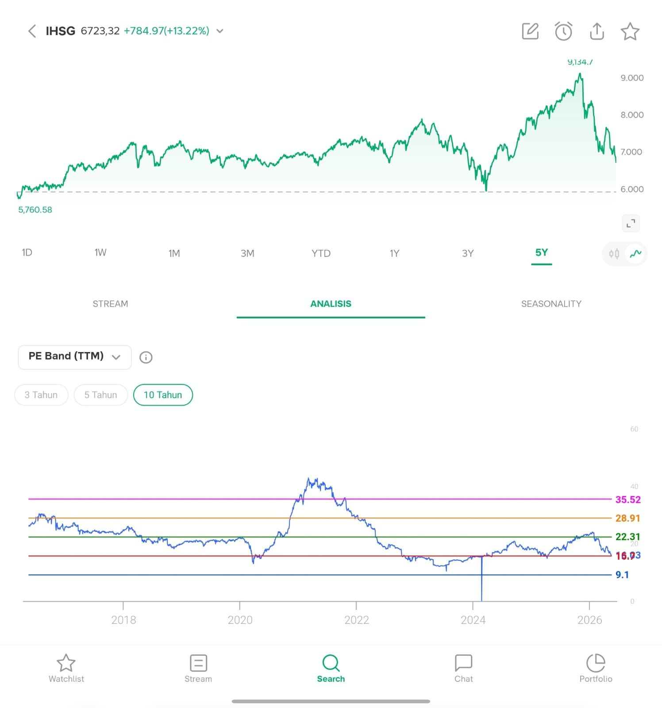

Executive Summary: Indonesia's Macroeconomic Positioning in the G20 (Q1 2026)
Indonesia opened 2026 with solid first-quarter results: year-on-year (YoY) GDP growth reached 5.61%, inflation remained well-contained, and Foreign Direct Investment (FDI) inflows held strong. However, a closer reading of these figures reveals a more nuanced picture—one where tangible momentum coexists with notable concerns regarding growth composition, and where Indonesia’s competitive standing within the G20 hinges on several critical qualifications.
Consolidated Snapshot: Indonesia vs. G20
| Macro Indicator | Indonesia | G20 Ranking | Context & Comparison |
|---|---|---|---|
| GDP Growth (Q1 2026, YoY) |
+5.61% | Highest among reporting members | China: 5.0%; US: 2.0% (annualized); Germany: +0.3%. India has not released Q1 data—IMF annual projection stands above 6%. |
| FDI Inflows (2024, Gross) |
~US$55.3 billion | Top 3 | Below the US (~US$349B) and Brazil (~US$86B) in absolute volume. Surpassed China (~US$33B, dropping sharply) and India (~US$44B). |
| Logistics Costs (% of GDP, 2025 est.) |
~14.29% | 6th most expensive | India: ~12–14%; Brazil and Argentina are higher. US, Germany, Japan: 7–9% of GDP. |
| Headline Inflation (April 2026) |
2.42% | Supportive | Within Bank Indonesia's (BI) target of 1.5%–3.5%. Core inflation: 2.44%. The February spike (4.76%) was a one-off effect caused by the 2025 electricity subsidy base effect. |
*GDP ranking is restricted to G20 economies that have released Q1 2026 data at the time of writing. India—whose annual growth projection outpaces Indonesia's—is excluded from this comparison as its quarterly data remains unpublished.
1. GDP Growth: Strong, but Demands an Accurate Reading
The 5.61% YoY growth in Q1 2026 is a robust, undeniable figure. Outperforming market expectations of 5.3%, it marks the fastest pace since Q3 2022. This expansion was driven by household consumption, up 5.52%—largely accelerated by Ramadan and Eid festive spending—and a 21.81% surge in government expenditure, reflecting the frontloading of social programs, civil servant (ASN) holiday allowances, and the early-year implementation of the Free Nutritious Meals program.
Among G20 economies that have published Q1 2026 data—including China (5.0%), the US (2.0% annualized), Germany (0.3%), and South Korea—Indonesia posted the highest rate. However, two major caveats must be highlighted:
- The India Factor: India has not released its calendar Q1 2026 GDP data at the time of writing. The IMF projects India’s annual growth to exceed 6% for 2026. If confirmed, this puts India ahead of Indonesia on a full-year basis. The "fastest in the G20" narrative is a real-time snapshot of available data, not a definitive ranking.
- Growth Composition: The 21.81% spike in fiscal spending was the primary engine for Q1, but this pace is inherently unsustainable. Frontloading is structurally designed for the beginning of the fiscal year, meaning Q2 and beyond will lack the same fiscal tailwinds. Growth heavily reliant on stimulus-driven consumption is far less durable than growth powered by productive investment or high-value-added exports.
2. FDI: Tangible Capital, but Requires Contextualization
Gross FDI inflows into Indonesia reached approximately US$55.3 billion in 2024. While this absolute volume places Indonesia among the top gross recipients in the G20—surpassing the nominal inflows of China (~US$33 billion) and India (~US$44 billion) during the same period—ranking by nominal values alone introduces a significant analytical blind spot. To achieve a methodologically sound comparison, these figures must be evaluated alongside Net FDI (accounting for divestments) and FDI-to-GDP ratios, which measure the true efficiency of a nation’s capital absorption. When scaled against the size of the economy, Indonesia’s FDI utilization still lags behind several ASEAN peers and advanced G20 counterparts, indicating that the massive nominal headline does not fully translate into deep macro-efficiency.
In Q1 2026, total investment realization—combining FDI and domestic investment (PMDN)—reached IDR 498.8 trillion (~US$30.5 billion), up 7.2% YoY. Industrial downstreaming accounted for IDR 147.5 trillion (nearly 30% of the total). The top FDI sources were Singapore (US$4.6B), Hong Kong (US$2.7B), China (US$2.2B), the US (US$1.3B), and Japan (US$1.0B).
The compelling aspect of this capital is its character: it consists primarily of multi-year commitments tied to nickel downstreaming and the EV battery ecosystem, rather than highly volatile, speculative portfolio flows.
However, concentration risk looms large. Over-reliance on a single industrial complex (nickel-EV) creates high correlation risks. If global EV adoption slows, nickel prices correct sharply, or trade partners establish alternative supply chains, these inflows could face simultaneous disruptions. Diversifying the FDI base into other sectors—such as electronics manufacturing, pharmaceuticals, and renewable energy—remains an unfulfilled structural task.
3. Logistics Costs: A Positive Trajectory, but Far from the Frontier
Indonesia's logistics costs are estimated at roughly 14.29% of GDP—a major drop from around 24% in 2012. This real achievement has been driven by national toll-road connectivity programs and the digitization of core port systems. Within the G20, this puts Indonesia on par with India (~12–14%) and ahead of Brazil and Argentina, yet it remains significantly higher than advanced economies like the US, Germany, and Japan (7–9% of GDP).
The government's target to slash this to 8% of GDP is highly ambitious and will demand much more than physical infrastructure. Indonesia's logistics inefficiencies stem from three overlapping structural layers:
- Geography: As an archipelago of over 17,000 islands, distribution is structurally more expensive compared to continental nations.
- Institutional Bottlenecks: Inter-agency regulatory fragmentation, corruption at transit checkpoints, and overlapping central-regional jurisdictions continue to impose hidden costs.
- Spatial Disparity: Infrastructure improvements remain heavily concentrated in Java. Outer regions—particularly East Kalimantan, Papua, and Central Sulawesi—still endure prohibitive logistics costs, hamstringing local industrialization.
Reaching the 8% threshold requires deep institutional and regulatory overhauls, not just pouring more concrete.
4. Inflation: Stable, but Looming Pressures Mandate Vigilance
Headline inflation at 2.42% in April 2026 is an encouraging sign, especially following a brief spike to 4.76% in February—which was predominantly a low-base effect from the 2025 electricity subsidies rather than underlying demand-pull pressure. Core inflation at 2.44% confirms that the broader price trend remains tame.
Bank Indonesia has held its policy rate at 4.75%, a supportive stance that sustains credit growth and household consumption without stoking new inflationary pressures. Moving forward, two primary risk factors require close monitoring:
- The Rupiah: The currency has depreciated by roughly 3.9% since the start of 2026. If this trend persists, the pass-through effect on imported goods—particularly food and energy components—could push inflation toward the upper bound of the target range.
- Global Energy: Persistent geopolitical tensions (including the US-Iran friction) keep energy prices highly volatile. As a net oil importer, Indonesia remains structurally vulnerable to externally driven fuel price shocks.
5. Q2 2026 Outlook: Solid Foundations, Diminishing Triggers
Several core drivers of the Q1 outperformance are cyclical and will not recur with the same intensity:
- The 21.81% expansion in government spending reflects frontloaded allocations that, by design, will decelerate in subsequent quarters.
- The Ramadan and Eid consumer spending surge is a seasonal catalyst absent in Q2.
Consequently, the World Bank revised its full-year 2026 growth forecast downward to 4.7%, while the OECD anticipates fiscal policy shifting toward a neutral stance over the remainder of the year. In a baseline scenario, full-year 2026 growth is projected to land between 4.7% and 5.2%. This remains a highly credible performance amid a challenging global environment, though lower than the Q1 headline. Subsequent momentum will rely heavily on private consumption (currently supported by a Consumer Confidence Index of 122.9) and investments, which face headwinds from global trade uncertainties and a prior sequence of declining FDI inflows in Q2–Q3 2025 before a partial recovery.
6. Deep Structural Risks
Short-term cyclical analysis is incomplete without confronting the deep structural headwinds that will dictate Indonesia’s trajectory over the next 10 to 15 years:
- Premature Deindustrialization: The manufacturing sector's share of Indonesia's GDP has contracted well before the nation has achieved the income levels typically associated with industrial maturity. This risks trapping Indonesia prematurely in a middle-income squeeze.
- Commodity Dependence: While nickel downstreaming marks a step forward, a growth model heavily anchored to a single strategic commodity breeds systemic risk. Nickel price volatility and technological shifts (e.g., solid-state batteries bypassing nickel requirements) are scenarios that demand proactive hedging.
- Spatial Inequality: Economic growth concentrated in Java and isolated downstreaming enclaves across outer islands does not automatically trickle down to underdeveloped regions. Without deliberate regional equalization strategies, aggregate national figures risk masking deepening domestic disparities.
- Human Capital: Indonesia’s long-term ambition to become a competitive economy in high-value-added industries hinges on a workforce possessing far higher technical capabilities than current baselines reflect. Vocational education reform and R&D investment are long-gestation plays whose yields materialize over 10 to 20 years, but the groundwork must be laid today.
Overall Assessment
Indonesia’s Q1 2026 performance sends a genuinely positive signal—it is neither a statistical anomaly nor a product of mere seasonal luck. The convergence of resilient household consumption, accelerated public spending, and durable FDI inflows tells the story of an economy with authentic momentum.
Yet, an honest appraisal demands nuance: the "fastest in the G20" title relies on incomplete data datasets; the composition of Q1 growth is not fully sustainable; FDI concentration in a single industrial ecosystem exposes the country to correlation risks; and Indonesia's long-term ambitions will be decided not by quarterly headlines, but by its capacity to execute on structural imperatives—logistics, human capital, industrial diversification, and institutional governance. The numbers are encouraging, but it is the context that gives them meaning.
References
- Trading Economics — Indonesia GDP Annual Growth Rate & Inflation Rate. Link
- U.S.-China Economic and Security Review Commission — China Bulletin: May 5, 2026. Link
- U.S. Bureau of Economic Analysis — GDP Advance Estimate, 1st Quarter 2026, April 30, 2026. Link
- Trading Economics — Germany GDP Annual Growth Rate. Link
- Trading Economics — India Fiscal Year GDP Growth. Link
- BKPM / Kementerian Investasi — Investment Realization Reaches IDR 1,714 Trillion, Absorbs 2.4 Million Workers, January 31, 2025. Link
- International Centre for Trade Transparency — Indonesian Government Targets Logistics Cost Reduction to 8% of GDP. Link
- IBC Institute / CEFD — The Hidden Obstacle: Logistics for 8 Percent Growth. Link
- Indonesia Investments — Indonesia's Economic Growth at 5.61% in Q1-2026, May 5, 2026. Link
- Indonesia Investments — International Institutions Cut Projections for Indonesia's 2026 Economic Growth, April 2026. Link
- OECD — Indonesia Economic Snapshot 2026. Link
- Business Indonesia / GIZ — Indonesia's Economic Outlook 2026: Resilient, but Acceleration Elusive. Link
- UNCTAD World Investment Report 2025 — Global FDI flows by economy. Link
- World Bank — Indonesia Economic Prospects, 2026. Link